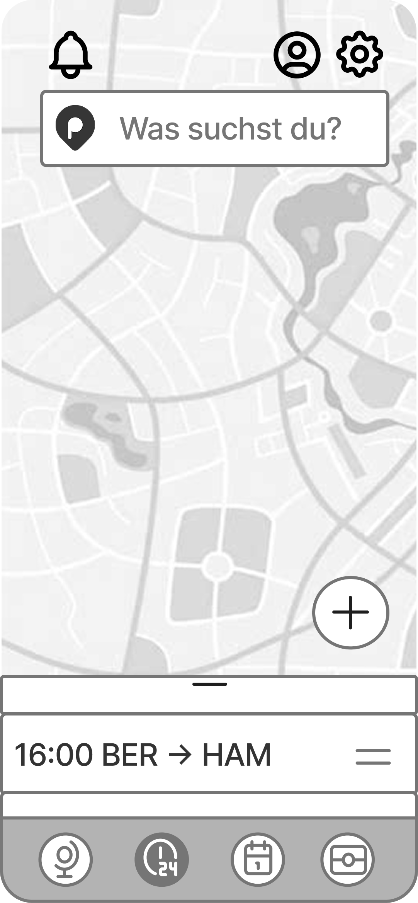

06 Mid-fidelity Wireframes
Wireflow
Dieser erste Abschnitt führt den Nutzer durch das Onboarding der App, beginnend mit einem persönlichen Willkommensbildschirm, der zum Planen einer Reise animiert. Anschließend gelangt der Nutzer zur Reiseübersicht, wo er bestehende Reisen einsehen und eine neue Reise starten kann. Beim Start einer neuen Reise werden grundlegende Informationen wie Ziel, Zeitraum und Budget abgefragt, bevor der Nutzer auswählt, ob er Aktivitäten, Unterkünfte oder Flüge suchen möchte.
Fokussiert auf die Flugsuche, ermöglicht dieser Abschnitt dem Nutzer, gezielt nach Flügen zu suchen. Nach der Auswahl „Flug“ kann der Nutzer Präferenzen für Direktflüge oder die maximale Anzahl von Umstiegen festlegen. Die Suchergebnisse werden übersichtlich auf einer Karte dargestellt, ergänzt durch eine Liste verfügbarer Flugzeiten. Abschließend kann der Nutzer die Details eines ausgewählten Fluges einsehen und diesen direkt buchen.

Dieser letzte Abschnitt behandelt die finale Phase der Reiseplanung. Nach der Buchung erhält der Nutzer eine Bestätigung. Der gebuchte Flug wird in der Reiseübersicht sichtbar und in den detaillierten Reisedaten zusammen mit weiteren Aktivitäten angezeigt. Ein besonderes Feature ist der Reise-Countdown, der die verbleibende Zeit bis zum Start anzeigt, ergänzt durch Push-Benachrichtigungen, die an wichtige Reiseereignisse wie den Check-in erinnern.


.png)